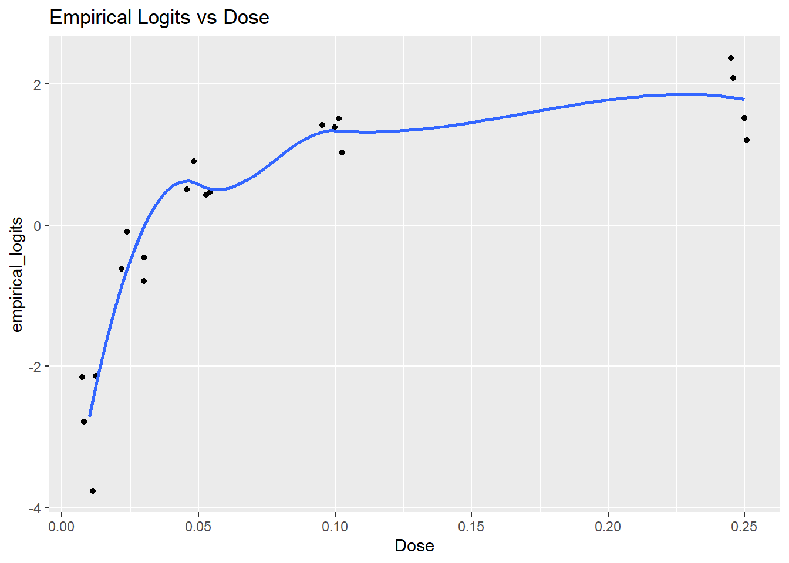
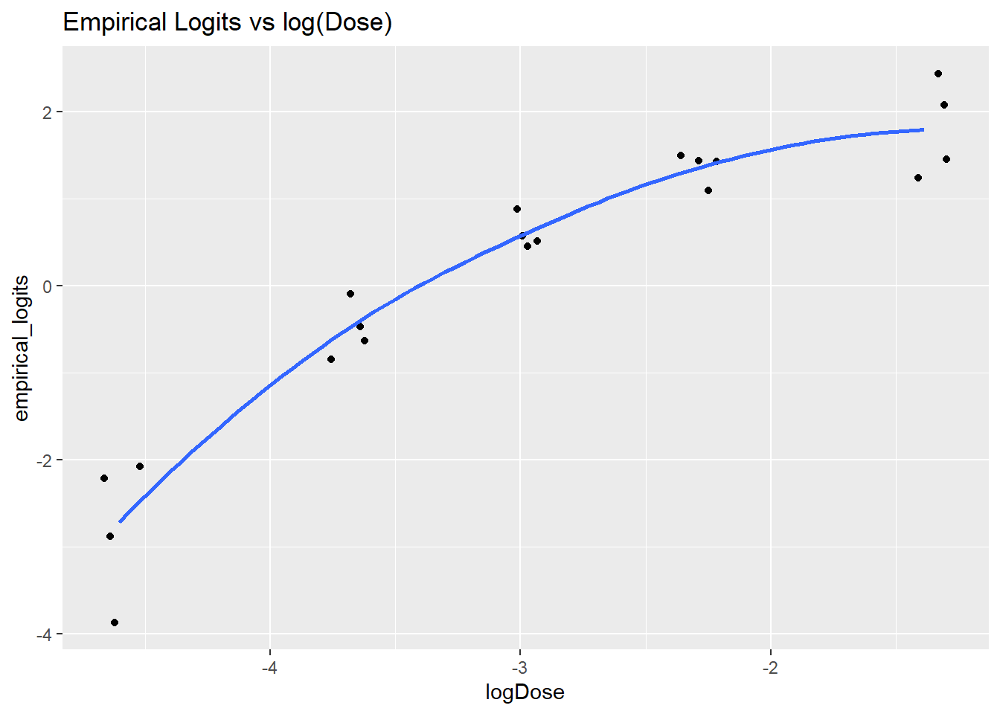

library(arm)
library(Sleuth3)
library(tidyverse)
library(vcdExtra)
library(magrittr)
library(datasets)4 Log Reg II
1. Count responses
Please load these libraries that you’ll need for this lab:
In this lab, We’ll cover the drop in deviance and deviance goodness of fit tests, and show how to perform them using R. We’ll also talk more about residuals from binomial logistic regression and about the dispersion parameter and over dispersion. Two additional topics are (1) a pathological (but not altogether rare) situation that can arise in logistic regression (2) using logistic regression to perform a test of the difference in two proportions.
2 Binomial logistic regression
In the previous lab, we introduced binary logistic regression in the context of a continuous explanatory variable (age). In this situation, each individual could, have had a unique combination of values of the explanatory variables. In practice,
due to rounding of ages to whole years, there were several explanatory variable combinations that occurred multiple times (this was why we had to jitter the plot of survival vs age). For those particular combinations of the explanatory variables (age/sex), we could count up the number of Donner party survivors and non-survivors so we’d have a count as the response, rather than a binary observations (survivors per age/sex?).
We are typically still inclined to think of the survival of individual Donner Party members, however; rather than in terms of the count of survivors out of the total number of members at each age-sex combination.
In this lab, we take a different perspective on logistic regression. We consider binary observations that are clustered into groups, where the counts of outcomes in each group are the natural measurements of interest. We consider each count to have a binomial distribution with some probability \(p\), and derive the log-odds from these binomial probabilities. Since a binomial \(p\) comes from an underlying Bernoulli \(p\) (or since a Bernoulli is a special case of a binomial), however, logistic regressions for binary outcomes and binomial counts are not fundamentally different beasts. They use the same model equations, they are fit with the same R function, they estimate the same parameters, and they rely on the same assumptions. Using binomial logistic regression when applicable, though, makes checking some of those assumptions more direct.
Aflatoxin data
In this lab we will continue with the ex2116 data from Sleuth3, introduced in lecture. Each of 20 tanks was stocked with fishes that had been exposed as embryos to one of 5 doses of a carcinogen. When the fishes were dissected a year later, the number of fishes that had developed liver tumors was recorded.
data(ex2116)
tumors <- ex2116
head(tumors)| Dose | Tumor | Total |
|---|---|---|
| 0.010 | 9 | 87 |
| 0.010 | 5 | 86 |
| 0.010 | 2 | 89 |
| 0.010 | 9 | 85 |
| 0.025 | 30 | 86 |
| 0.025 | 41 | 86 |
Here we’ll add a column that records the number of fish in each tank which did not develop liver tumors, and a column that assigns a unique label to each of the 20 tanks. We’ll also add a column for log(Dose) and log(Dose)^2 since we used those as explanatory variables in the model you saw in the narrated lectures.
tumors %<>% mutate(Dose = Dose, Tumor = Tumor, NoTumor = Total - Tumor, TankID = factor(1:nrow(tumors)),logDose = log(Dose), logDose2 = log(Dose)^2)
head(tumors)| Dose | Tumor | Total | NoTumor | TankID | logDose | logDose2 |
|---|---|---|---|---|---|---|
| 0.010 | 9 | 87 | 78 | 1 | -4.60517 | 21.20759 |
| 0.010 | 5 | 86 | 81 | 2 | -4.60517 | 21.20759 |
| 0.010 | 2 | 89 | 87 | 3 | -4.60517 | 21.20759 |
| 0.010 | 9 | 85 | 76 | 4 | -4.60517 | 21.20759 |
| 0.025 | 30 | 86 | 56 | 5 | -3.68888 | 13.60783 |
| 0.025 | 41 | 86 | 45 | 6 | -3.68888 | 13.60783 |
We’ll also create a case-format version that records the binary status (tumor or not) for each of the 1739 individual fishes.
check code tumors_case$Outcome should be a factor
# The syntax dplyr::select() ensures that the select() function from the dplyr package is
# used instead of the select() function from the MASS package, in case you still have MASS
# loaded in the library.
tumors_freq <- tumors %>% dplyr::select(-Total) %>%
pivot_longer(Tumor:NoTumor,names_to="Outcome",values_to="Freq",cols_vary = "slowest") %>%
mutate(Outcome=as.factor(Outcome))
tumors_case <- expand.dft(tumors_freq) %>%
mutate(Outcome=as.factor(Outcome))
head(tumors_case)| Dose | TankID | logDose | logDose2 | Outcome |
|---|---|---|---|---|
| 0.01 | 1 | -4.60517 | 21.20759 | Tumor |
| 0.01 | 1 | -4.60517 | 21.20759 | Tumor |
| 0.01 | 1 | -4.60517 | 21.20759 | Tumor |
| 0.01 | 1 | -4.60517 | 21.20759 | Tumor |
| 0.01 | 1 | -4.60517 | 21.20759 | Tumor |
| 0.01 | 1 | -4.60517 | 21.20759 | Tumor |
(With most of the lab examples so far oriented around examples of death, discrimination, and disease, you might accuse us statisticians of attempting to usurp from economics the title of “dismal science”! (Economists think they’re pessimists. what they call “maximizing utility”, statisticians call “minimizing loss”). We promise nobody dies in the next lab. Probably.
Binary vs binomial
There are several equivalent ways of fitting a logistic regression model with glm() to data such as the ex2116 data. We will see why the fitting methods that preserve information about the counts within each tank are preferable for our purposes.
Modeling a binomial count for each tank
First, the response can be specified as a 2-column matrix containing counts of successes in the first column and counts of failures in the second.
mod1 <- glm(data = tumors, cbind(Tumor, NoTumor) ~ logDose + logDose2, family = "binomial")
summary(mod1)
Call:
glm(formula = cbind(Tumor, NoTumor) ~ logDose + logDose2, family = "binomial",
data = tumors)
Coefficients:
Estimate Std. Error z value Pr(>|z|)
(Intercept) 1.02921 0.49343 2.086 0.03699 *
logDose -1.03048 0.35743 -2.883 0.00394 **
logDose2 -0.39195 0.06136 -6.388 1.68e-10 ***
---
Signif. codes: 0 '***' 0.001 '**' 0.01 '*' 0.05 '.' 0.1 ' ' 1
(Dispersion parameter for binomial family taken to be 1)
Null deviance: 667.195 on 19 degrees of freedom
Residual deviance: 26.048 on 17 degrees of freedom
AIC: 119.45
Number of Fisher Scoring iterations: 4The response can also be specified as a vector of proportions of successes in each group, with the total in each group given through the weights argument:
mod2 <- glm(data = tumors, Tumor/Total ~ logDose + logDose2, weights = Total, family = "binomial")
summary(mod2)
Call:
glm(formula = Tumor/Total ~ logDose + logDose2, family = "binomial",
data = tumors, weights = Total)
Coefficients:
Estimate Std. Error z value Pr(>|z|)
(Intercept) 1.02921 0.49343 2.086 0.03699 *
logDose -1.03048 0.35743 -2.883 0.00394 **
logDose2 -0.39195 0.06136 -6.388 1.68e-10 ***
---
Signif. codes: 0 '***' 0.001 '**' 0.01 '*' 0.05 '.' 0.1 ' ' 1
(Dispersion parameter for binomial family taken to be 1)
Null deviance: 667.195 on 19 degrees of freedom
Residual deviance: 26.048 on 17 degrees of freedom
AIC: 119.45
Number of Fisher Scoring iterations: 4Be sure to verify that mod1 and mod2 are equivalent.
Modeling a binary outcome for each fish
We have converted the data to case format, where each row contains an individual binary outcome corresponding to an individual fish. These outcomes can be modeled directly, just as we saw with the (ungrouped) Donner data in Lab 3.
mod3 <- glm(data = tumors_case, Outcome ~ logDose + logDose2, family = "binomial")
summary(mod3)
Call:
glm(formula = Outcome ~ logDose + logDose2, family = "binomial",
data = tumors_case)
Coefficients:
Estimate Std. Error z value Pr(>|z|)
(Intercept) 1.02921 0.49341 2.086 0.03698 *
logDose -1.03048 0.35740 -2.883 0.00394 **
logDose2 -0.39195 0.06135 -6.388 1.68e-10 ***
---
Signif. codes: 0 '***' 0.001 '**' 0.01 '*' 0.05 '.' 0.1 ' ' 1
(Dispersion parameter for binomial family taken to be 1)
Null deviance: 2395.8 on 1738 degrees of freedom
Residual deviance: 1754.7 on 1736 degrees of freedom
AIC: 1760.7
Number of Fisher Scoring iterations: 4Make a quick comparison of the coefficient estimates from mod2 and mod3:
cbind(coefficients(mod2),coefficients(mod3)) [,1] [,2]
(Intercept) 1.0292126 1.029213
logDose -1.0304804 -1.030480
logDose2 -0.3919491 -0.391949The two models give the same coefficient estimates, and you can also verify that the corresponding standard errors are the same. Therefore, in terms of inferences about the regression coefficients, treating the data as binary (one 0/1 outcome for each fish) or binomial (one count outcome for each tank) doesn’t seem to matter.
But, let’s remember that when we looked at the binomial logistic regression model in class, we noticed some over dispersion in the counts. We’ll first examine one more approach to modeling the binomial counts, and then turn to talking about the over dispersion.
Modeling as binomial counts within each Dose
Note that “TankID” is not a term in any of the models we fit above. The binomial logistic models treat the 4 tanks in each of the 5 dose groups as independent binomial observations. Within each Dose level, the 4 tanks are supposed to be draws from 4 independent binomial random variables, with potentially different \(n\) (different number of fish in each tank) but all with the same \(p\). In the binary logistic model, the tanks are ignored and the fish-level outcomes are treated as independent Bernoulli random variables, with a common \(p\) at each Dose. In either form, a single \(p\) applies to every fish in the Dose level, regardless of tank. Indeed, we can explicitly collapse across the tanks before fitting the model, without affecting any of the inferences:
(summed_tumor <- summarize(group_by(tumors, Dose, logDose, logDose2), sum(Tumor), sum(NoTumor)))`summarise()` has grouped output by 'Dose', 'logDose'. You can override using
the `.groups` argument.| Dose | logDose | logDose2 | sum(Tumor) | sum(NoTumor) |
|---|---|---|---|---|
| 0.010 | -4.605170 | 21.207592 | 25 | 322 |
| 0.025 | -3.688880 | 13.607832 | 132 | 214 |
| 0.050 | -2.995732 | 8.974412 | 226 | 127 |
| 0.100 | -2.302585 | 5.301898 | 281 | 74 |
| 0.250 | -1.386294 | 1.921812 | 286 | 52 |
Notice that we’ve now reduced the dataset down to five observations! And now we’ll fit the model to these summed responses:
mod4 <- glm(data = summed_tumor, cbind(`sum(Tumor)`, `sum(NoTumor)`) ~ logDose + logDose2, family = "binomial")
summary(mod4)
Call:
glm(formula = cbind(`sum(Tumor)`, `sum(NoTumor)`) ~ logDose +
logDose2, family = "binomial", data = summed_tumor)
Coefficients:
Estimate Std. Error z value Pr(>|z|)
(Intercept) 1.02921 0.49343 2.086 0.03699 *
logDose -1.03048 0.35743 -2.883 0.00394 **
logDose2 -0.39195 0.06136 -6.388 1.68e-10 ***
---
Signif. codes: 0 '***' 0.001 '**' 0.01 '*' 0.05 '.' 0.1 ' ' 1
(Dispersion parameter for binomial family taken to be 1)
Null deviance: 641.234089 on 4 degrees of freedom
Residual deviance: 0.086879 on 2 degrees of freedom
AIC: 35.091
Number of Fisher Scoring iterations: 3And compare coefficient estimates:
cbind(coefficients(mod2),coefficients(mod3),coefficients(mod4)) [,1] [,2] [,3]
(Intercept) 1.0292126 1.029213 1.0292126
logDose -1.0304804 -1.030480 -1.0304804
logDose2 -0.3919491 -0.391949 -0.3919491And once again you can verify that all of the corresponding standard errors are also the same. So what’s going on here, and which of these models is “the best one” to use?
Ok, so now what?!
The parameter estimates and standard errors are all identical. We reach the same conclusions from each model. But let’s look at the residual deviances for each of the models:
cbind(deviance(mod2),deviance(mod3),deviance(mod4)) [,1] [,2] [,3]
[1,] 26.04806 1754.692 0.08687945It’s also important to recognize that in mod2, mod3 and mod4, the sample sizes are n = 20, n = 1739 and n = 5, respectively. And, the null deviances for each model are also substantially different; again in order of mod2, mod3 and mod4 these are 667.20, 2395.84 and 641.23. The difference in deviance (the deviance accounted for by a model), however, is the same for every form of the model.
To see more plainly that the methods above are equivalent, we can view minimal summaries from each using the display() function from arm. The abbreviated output (compared to summary) facilitates comparison between several models on the same page.
# counts in tanks
display(mod2)glm(formula = Tumor/Total ~ logDose + logDose2, family = "binomial",
data = tumors, weights = Total)
coef.est coef.se
(Intercept) 1.03 0.49
logDose -1.03 0.36
logDose2 -0.39 0.06
---
n = 20, k = 3
residual deviance = 26.0, null deviance = 667.2 (difference = 641.1)# binary outcomes per fish
display(mod3)glm(formula = Outcome ~ logDose + logDose2, family = "binomial",
data = tumors_case)
coef.est coef.se
(Intercept) 1.03 0.49
logDose -1.03 0.36
logDose2 -0.39 0.06
---
n = 1739, k = 3
residual deviance = 1754.7, null deviance = 2395.8 (difference = 641.1)# counts in dose level ignoring tanks
display(mod4)glm(formula = cbind(`sum(Tumor)`, `sum(NoTumor)`) ~ logDose +
logDose2, family = "binomial", data = summed_tumor)
coef.est coef.se
(Intercept) 1.03 0.49
logDose -1.03 0.36
logDose2 -0.39 0.06
---
n = 5, k = 3
residual deviance = 0.1, null deviance = 641.2 (difference = 641.1)All the same assumptions go into each of these ways of fitting the models, and all the same inferences come out. In particular, we are always assuming that once we know the Dose a fish received, knowing the particular tank in which that fish was housed cannot give us any more information about that fish’s chance of having a tumor – not even if we know that the fish came from a tank in which an especially large (or small) number of other fish got tumors, compared to other tanks within the same dose level. In the binomial-tank-counts model, this assumption reads like “every binomial within a dose level has the same \(p\).” In the binary-fish model, it reads “every Bernoulli within a dose level has the same \(p\).” In the binomial-dose-count model, it reads “the Bernoulli’s across all tanks within a dose must be independent.” We could call this the assumption of “irrelevant groups (tanks).”
If we have some grouping at all, however, we often suspect that this last assumption about independence is not sound. Fish in the same tank are expected to be more similar to one another than fish in different tanks. That is, we should not expect same binomial \(p\) in every tank, nor should we suppose that all the Bernoulli responses in a dose level are independent, regardless of tank.
In what follows, we will see that fitting the model in the “tank-count” binomial form, as opposed to per-fish binary form or the dose-count binomial form, is the way that will allow us to check whether the group-irrelevance of assumption is reasonable. We’ll see that not making this assumption comes with a steep price, and preview another technique that will sometimes allow us to avoid paying it.
3. Model fit and model comparison
In the binary logistic case, there was little we could do to directly assess model fit. You could try squinting at some residual plots, but that’s about it. The single binary outcomes just bounce around too much to say of anything about what the fitted line “should have done” at any given predictor value. It certainly should not chase every individual 1 or 0. To get some stability, you need to be able to put multiple observations within the same “bin”, so that you can say whether the proportion (or log-odds) in that bin is close to what the model predicts.
Empirical logits
The empirical logit is just the logit transformation applied to the proportion within a bin (this isn’t the log-odds of the probability within the bin, it’s just an estimate based on the observed proportion, hence “empirical”).
Remember the logit transformation of a proportion/probability is given by qlogis():
tumors| Dose | Tumor | Total | NoTumor | TankID | logDose | logDose2 |
|---|---|---|---|---|---|---|
| 0.010 | 9 | 87 | 78 | 1 | -4.605170 | 21.207592 |
| 0.010 | 5 | 86 | 81 | 2 | -4.605170 | 21.207592 |
| 0.010 | 2 | 89 | 87 | 3 | -4.605170 | 21.207592 |
| 0.010 | 9 | 85 | 76 | 4 | -4.605170 | 21.207592 |
| 0.025 | 30 | 86 | 56 | 5 | -3.688880 | 13.607832 |
| 0.025 | 41 | 86 | 45 | 6 | -3.688880 | 13.607832 |
| 0.025 | 27 | 86 | 59 | 7 | -3.688880 | 13.607832 |
| 0.025 | 34 | 88 | 54 | 8 | -3.688880 | 13.607832 |
| 0.050 | 54 | 89 | 35 | 9 | -2.995732 | 8.974412 |
| 0.050 | 53 | 86 | 33 | 10 | -2.995732 | 8.974412 |
| 0.050 | 64 | 90 | 26 | 11 | -2.995732 | 8.974412 |
| 0.050 | 55 | 88 | 33 | 12 | -2.995732 | 8.974412 |
| 0.100 | 71 | 88 | 17 | 13 | -2.302585 | 5.301898 |
| 0.100 | 73 | 89 | 16 | 14 | -2.302585 | 5.301898 |
| 0.100 | 65 | 88 | 23 | 15 | -2.302585 | 5.301898 |
| 0.100 | 72 | 90 | 18 | 16 | -2.302585 | 5.301898 |
| 0.250 | 66 | 86 | 20 | 17 | -1.386294 | 1.921812 |
| 0.250 | 75 | 82 | 7 | 18 | -1.386294 | 1.921812 |
| 0.250 | 72 | 81 | 9 | 19 | -1.386294 | 1.921812 |
| 0.250 | 73 | 89 | 16 | 20 | -1.386294 | 1.921812 |
empirical_logits <- with(tumors, qlogis(Tumor/Total))
empirical_logits [1] -2.15948425 -2.78501124 -3.77276094 -2.13350876 -0.62415431 -0.09309042
[7] -0.78170058 -0.46262352 0.43363599 0.47378435 0.90078655 0.51082562
[13] 1.42946653 1.51787072 1.03889305 1.38629436 1.19392247 2.37157796
[19] 2.07944154 1.51787072We plot the empirical logits against Dose to see the shape of the relationship we’re trying to capture on the log-odds scale, along with a loess smooth.
ggplot(data = tumors, aes(x = Dose, y = empirical_logits))+
geom_jitter(width = 0.005, height = 0.01) +
geom_smooth(se = FALSE) +
ggtitle("Empirical Logits vs Dose") `geom_smooth()` using method = 'loess' and formula = 'y ~ x'
This appearance of a logarithmic relationship between the Dose and the logits prompts the a log-transformation of the dose to straighten it out (that is, it suggests that the odds of tumor are nearly linear in dose).
ggplot(data = tumors, aes(x = logDose, y = empirical_logits)) +
geom_jitter(width = 0.1, height = 0.1) +
geom_smooth(se = FALSE) +
ggtitle("Empirical Logits vs log(Dose)")`geom_smooth()` using method = 'loess' and formula = 'y ~ x'
This plot suggests that a logistic regression model which includes both log(Dose) and log(Dose)^2 would be appropriate to capture the observed trend in the empirical logits. Unlike with binary logistic regression, the binomial model lets us measure the lack-of-fit to a proposed model, and compare the fit between models.
Deviance goodness of fit , lack of fit.
Recall that the deviance goodness of fit test compares a fitted model to a saturated model, or one in which there are as many parameters as there are data points. In these goodness of fit comparisons,
the null hypothesis corresponds to the fitted model (which is a reduced model relative to the saturated model), and the alternative hypothesis corresponds to the saturated model. Therefore, a small p-value indicating evidence for rejection of the fitted model in favor of the saturated model is evidence of lack of fit.
The LRstats() from vcdExtra function shows a convenient summary of the fits of one or more model objects.
mod5 <- glm(data = tumors, (Tumor/Total) ~ Dose, weights = Total, family = "binomial")
mod6 <- glm(data = tumors, (Tumor/Total) ~ logDose, weights = Total, family = "binomial")
mod7 <- glm(data = tumors, (Tumor/Total) ~ logDose + logDose2, weights = Total, family = "binomial")
LRstats(mod5, mod6, mod7)| AIC | BIC | LR Chisq | Df | Pr(>Chisq) | |
|---|---|---|---|---|---|
| mod5 | 368.4449 | 370.4364 | 277.04682 | 18 | 0.0000000 |
| mod6 | 160.2947 | 162.2862 | 68.89661 | 18 | 0.0000001 |
| mod7 | 119.4461 | 122.4333 | 26.04806 | 17 | 0.0735894 |
The LR Chisq is the residual deviance, which is the sum of the squared deviance residuals. For instance, for mod5, the residual deviance value of 277 comes can be obtained as
resid(mod5, type = 'deviance') %>% raise_to_power(2) %>% sum[1] 277.0468or as
mod5$deviance[1] 277.0468This quantity has an approximate chi-squared distribution if the model is correct, which is the basis for the deviance goodness of fit test. Pr(>Chisq) provides the p-value for this test. For mod6, let’s check that this is equivalent to doing this test “by hand,” using the residual deviance and residual df:
pchisq(mod6$deviance, df = mod6$df.residual, lower.tail = FALSE)[1] 6.940025e-08Each successive model shows a better fit, as evidenced by the successively larger p-values from the goodness of fit tests.
Drop-in-deviance test
Just a reminder that the drop in deviance test is different from the deviance goodness of fit test. Whereas the deviance goodness of fit test provides a comparison between a single fitted model and a saturated model, a drop in deviance test provides a way to compare two fitted models when one of those models is nested within the other one. Put another way, the drop in deviance test is a comparison between a reduced model (null hypothesis) and a full model (alternative hypothesis) and we use it in cases where the reduced model is reduced from (or nested in) the full model.
Using the models we have already fit, let’s use the anova() function to perform a drop in deviance test comparing a reduced model (only logDose included) to a full model (logDose and logDose2 included):
anova(mod6, mod7,test="Chisq")| Resid. Df | Resid. Dev | Df | Deviance | Pr(>Chi) |
|---|---|---|---|---|
| 18 | 68.89661 | NA | NA | NA |
| 17 | 26.04806 | 1 | 42.84856 | 0 |
The p-value of the drop in deviance test is quite small, p < 0.0001. This provides convincing evidence in favor of the full model; namely, the one that includes logDose and logDose2.
Information criteria for model comparison
Let’s look at the LRstats again, this time with a focus on the first two columns:
LRstats(mod5, mod6,mod7)| AIC | BIC | LR Chisq | Df | Pr(>Chisq) | |
|---|---|---|---|---|---|
| mod5 | 368.4449 | 370.4364 | 277.04682 | 18 | 0.0000000 |
| mod6 | 160.2947 | 162.2862 | 68.89661 | 18 | 0.0000001 |
| mod7 | 119.4461 | 122.4333 | 26.04806 | 17 | 0.0735894 |
The AIC and BIC, as you may recall from Data Analytics I, are likelihood-based methods for comparing models. Both penalize models with more parameters, but the BIC generally applies a larger penalty (and hence promotes selection of simpler models). Models with smaller values are preferred. The AIC or BIC of a single model is not a measure of the goodness of fit for that model the information criteria are only meaningful as comparisons between models. The information criteria can be applied to compare models which are not nested (neither model’s parameters are a strict subset of the other’s), as long as each model has a likelihood.
Which of these three candidate models would we choose, based on the information criteria? Does this align with the conclusion from the drop-in-deviance test, given that mod6 is nested within mod7?
Deviance residuals, Pearson residuals - dispersion parameter estimated from Pearson – chi squared
In the case of binomial logistic regression it can be helpful to look at the deviance and/or Pearson residuals to (a) evaluate the model fit and (b) check for outliers. Provided that the binomial counts are fairly large, both the deviance and Pearson residuals should look like draws from a standard Normal distribution, so too many residuals outside of the [-2,2] interval may be cause for concern. Here’ we’ll look at a few plots of both the deviance and Pearson residuals.
tumors$residuals_deviance <- residuals(mod7)
tumors$residuals_pearson <- residuals(mod7, type = "pearson")
ggplot(data = tumors, aes(logDose,residuals_deviance)) + geom_point()ggplot(data = tumors, aes(logDose,residuals_pearson)) + geom_point()ggplot(data = tumors, aes(residuals_deviance,residuals_pearson)) + geom_point()There are no obvious patterns in either of the plots showing the residuals against logDose, and there are also no outliers. This is all good, it suggests that we’ve done a good job at modeling the log odds of tumors (although we still have to talk about the over dispersion). We created the scatterplot of the Pearson residuals versus the deviance residuals just so you could see how similar they are. For the most part, they fall along the y = x diagonal.
When looking at residuals, it can also be useful to plot the residuals versus the fitted values of a model. Again, we’re hoping that we don’t see any patterns in such a plot:
tumors$fitted = predict.glm(mod7,scale="link")
ggplot(data = tumors, aes(fitted,residuals_deviance)) + geom_point()There are no clear patterns or problems with this plot, so again we have confirmation that we’re using a decent model at this point.
4 Dealing with over-dispersion
Over dispersion can arise when there is structure in the data that is not accounted for by a model. A high degree of over dispersion may indicate that important predictors have been omitted, the functional form of the predictors is inadequate to capture relevant features of the data, observations assumed independent are not so, or large outliers are present. When there is evidence of lack of fit, we expect overdispersion.
From the residuals of mod7 that we just examined (mod7 includes logDose + logDose2), it doesn’t seem that there are outliers. It also seems that we’ve gotten a good functional form for the predictors (i.e., logDose + logDose2). Is there even evidence of lack of fit here? We looked at the deviance goodness of fit above, but let’s repeat it here just for mod7:
LRstats(mod7)| AIC | BIC | LR Chisq | Df | Pr(>Chisq) | |
|---|---|---|---|---|---|
| mod7 | 119.4461 | 122.4333 | 26.04806 | 17 | 0.0735894 |
The p-value is 0.07, which suggests that our model is a good fit, but just barely. You also saw in the narrated lectures that the estimated dispersion parameter here is 1.48 not wildly larger than one, but larger nonetheless. Even though there may not be strong evidence for over dispersion here, it makes sense that the counts of fish with tumors are over dispersed because it’s not likely that measurements on fish from the same tank are statistically independent.
When in doubt, assume that counts are over dispersed.
You saw in the narrated lecture that the approach to use in the binomial setting when over dispersion is present is called quasi-binomial logistic regression. We’ll perform this in R, and then we’ll compare the model output from the quasi-binomial approach to the binomial approach in mod7.
mod8 <- glm(data = tumors, (Tumor/Total) ~ logDose + logDose2, weights = Total, family = "quasibinomial")
display(mod7)glm(formula = (Tumor/Total) ~ logDose + logDose2, family = "binomial",
data = tumors, weights = Total)
coef.est coef.se
(Intercept) 1.03 0.49
logDose -1.03 0.36
logDose2 -0.39 0.06
---
n = 20, k = 3
residual deviance = 26.0, null deviance = 667.2 (difference = 641.1)display(mod8)glm(formula = (Tumor/Total) ~ logDose + logDose2, family = "quasibinomial",
data = tumors, weights = Total)
coef.est coef.se
(Intercept) 1.03 0.60
logDose -1.03 0.43
logDose2 -0.39 0.07
---
n = 20, k = 3
residual deviance = 26.0, null deviance = 667.2 (difference = 641.1)
overdispersion parameter = 1.5The fundamental change between mod7 and mod8 is that the standard errors of the regression coefficients in mod8, the quasi-binomial model are larger than they are in mod7. This illustrates the problem with ignoring a lack of statistical independence:
If responses are not statistically independent, but you fit a model that assumes statistical independence, the mistake you often make is that of underestimating standard errors. This results in p-values being smaller than they should be, and confidence intervals being more narrow than they should be.
A strong disadvantage of the quasi-likelihood (in this case quasi-binomial) approach is that since quasi-likelihoods are not real likelihoods, we cannot use likelihood-based methods of model comparison, like AIC and BIC, to choose between them, nor can we compare them with true likelihood models. Indeed, the idea of “model comparison” becomes somewhat muddled when we are talking about a collection of things that are not proper probability models to begin with.
You’ll learn about an alternative to the quasi-binomial model in Module 7 when we introduce mixed effects models. In that Module, we’ll refit the tumor data, including TankID as a random effect. You might wonder why we can’t just include TankID in our logistic regression model to address the over dispersion problem. Recall, however, that there are 20 tanks, so that if we use TankID in the model, we’ll gobble up all 20 data points before we can estimate all the “tank effects.” Look at what happens:
mod9 <- glm(data = tumors, (Tumor/Total) ~ logDose + logDose2 + TankID, weights = Total, family = "binomial")
summary(mod9)
Call:
glm(formula = (Tumor/Total) ~ logDose + logDose2 + TankID, family = "binomial",
data = tumors, weights = Total)
Coefficients: (2 not defined because of singularities)
Estimate Std. Error z value Pr(>|z|)
(Intercept) 0.33225 1.28208 0.259 0.79552
logDose -1.45660 1.00434 -1.450 0.14697
logDose2 -0.43379 0.16314 -2.659 0.00784 **
TankID2 -0.62553 0.57989 -1.079 0.28073
TankID3 -1.61328 0.79714 -2.024 0.04299 *
TankID4 0.02598 0.49820 0.052 0.95842
TankID5 -0.42670 0.39718 -1.074 0.28269
TankID6 0.10437 0.39138 0.267 0.78973
TankID7 -0.58424 0.40069 -1.458 0.14481
TankID8 -0.26517 0.39306 -0.675 0.49991
TankID9 -0.36920 0.40678 -0.908 0.36409
TankID10 -0.32905 0.40933 -0.804 0.42147
TankID11 0.09795 0.41529 0.236 0.81354
TankID12 -0.29201 0.40849 -0.715 0.47471
TankID13 0.04317 0.37730 0.114 0.90890
TankID14 0.13158 0.38163 0.345 0.73027
TankID15 -0.34740 0.35820 -0.970 0.33212
TankID16 NA NA NA NA
TankID17 -0.32395 0.37597 -0.862 0.38888
TankID18 0.85371 0.48207 1.771 0.07657 .
TankID19 0.56157 0.44855 1.252 0.21058
TankID20 NA NA NA NA
---
Signif. codes: 0 '***' 0.001 '**' 0.01 '*' 0.05 '.' 0.1 ' ' 1
(Dispersion parameter for binomial family taken to be 1)
Null deviance: 6.6720e+02 on 19 degrees of freedom
Residual deviance: 6.2617e-14 on 0 degrees of freedom
AIC: 127.4
Number of Fisher Scoring iterations: 4This model is over-saturated we’ve put too many terms in it, and not all of them can be estimated. Notice also that the degrees of freedom corresponding to the residual deviance is 0. We should not use this model for inference.
5 A Pitfall – perfect separation
In this section of the lab, we’ll discuss a pathology that can arise in logistic regression. We’ll show you what happens, and we’ll make a suggestion for dealing with the problem.
First, we’ll create some fake data:
y <- c(0,0,0,0,1,1,1,1)
x1 <-c(1,2,3,3,5,6,10,11)
x2 <-c(3,2,-1,-1,2,4,1,0)
df <- data.frame(y, x1, x2)
df| y | x1 | x2 |
|---|---|---|
| 0 | 1 | 3 |
| 0 | 2 | 2 |
| 0 | 3 | -1 |
| 0 | 3 | -1 |
| 1 | 5 | 2 |
| 1 | 6 | 4 |
| 1 | 10 | 1 |
| 1 | 11 | 0 |
Take a look at a plot of the data below, and it will be easy to see what the potential problem is somewhere between 3 and 5, there’s perfect separation between the y = 0 responses and the y = 1 responses. The question is, where is “somewhere?”
ggplot(data = df, aes(x = x1, y = y)) +
geom_point() +
ggtitle("Note the clean split between 0's and 1's")The following will not work try inserting an “r” to make it executable.
m1 <- glm(y ~ x1 + x2, family = binomial, data = df)This generates an error, because x1 predicts too well. There is no unique “maximum likelihood estimate” for the coefficient on x1, because there are too many super-excellent solutions, and the numerical algorithm behind the glm() function just can’t choose. This might seem like the silliest possible problem to have that there are too many good solutions but saying that doesn’t make the algorithm converge.
If we really believe that we can predict y perfectly from x1, we could throw out the whole model and just write down a decision rule like “predict y = 1 if x1 >= 4, predict y = 0 otherwise.” Of course, we don’t know if this is a better or worse rule than, say, “predict y = 1 if x1 >= 3.5, predict y = 0 otherwise” the choice of ‘4’ as the cutpoint was arbitrary. That is, we might have the same problem that the glm() algorithm had, which cut-point is the best one?!
The real underlying issue here is that we should not believe that we’ve derived a perfect classifier (i.e., a decision rule that says when y = 1 and when y = 0) from 8 data points! In fact, in the fake data we created above, we also created a second explanatory variable, x2, and we never even used it.
An alternative approach sidesteps the problem by directly imposing our belief that a perfect classifier is too good to be true, and so it allows for estimating a coefficient on x1. This approach, a Bayesian generalized linear model, is well beyond the scope of this course, but you can nevertheless see it in action using the bayesglm() function in the arm package:
bayes1 <- bayesglm(y ~ x1 + x2, family = binomial, data = df, prior.df = 1)
summary(bayes1)
Call:
bayesglm(formula = y ~ x1 + x2, family = binomial, data = df,
prior.df = 1)
Coefficients:
Estimate Std. Error z value Pr(>|z|)
(Intercept) -3.6937 1.9372 -1.907 0.0566 .
x1 0.7055 0.3863 1.826 0.0678 .
x2 0.3347 0.4448 0.752 0.4518
---
Signif. codes: 0 '***' 0.001 '**' 0.01 '*' 0.05 '.' 0.1 ' ' 1
(Dispersion parameter for binomial family taken to be 1)
Null deviance: 11.0904 on 7 degrees of freedom
Residual deviance: 2.4855 on 5 degrees of freedom
AIC: 8.4855
Number of Fisher Scoring iterations: 57You should still take a careful look at this model summary. In particular there were 46 iterations of the Fisher scoring algorithm even with the prior specification about imperfect separation, the algorithm still took a while to find a solution.
6 Test for difference in proportions
Another important application of logistic regression is its use in testing the difference in two proportions. We’ll return to the Berkeley Admissions data to take a look.
(UCBA_sum <- t(margin.table(UCBAdmissions,c(1,2)))) Admit
Gender Admitted Rejected
Male 1198 1493
Female 557 1278And remember that we looked at the equivalence between prop.test() and chisq.test().
prop.test(UCBA_sum)
2-sample test for equality of proportions with continuity correction
data: UCBA_sum
X-squared = 91.61, df = 1, p-value < 2.2e-16
alternative hypothesis: two.sided
95 percent confidence interval:
0.1129887 0.1703022
sample estimates:
prop 1 prop 2
0.4451877 0.3035422 chisq.test(UCBA_sum)
Pearson's Chi-squared test with Yates' continuity correction
data: UCBA_sum
X-squared = 91.61, df = 1, p-value < 2.2e-16Now let’s perform the same test, using logistic regression.
7 Check code: gender should be factor and admit is factor with 0 levels
UCBA_case <- expand.dft(UCBA_sum)
UCBA_case %<>% mutate(Gender=factor(Gender), Admit = relevel(factor(Admit),"Rejected"))
#mutate(Admit = factor(Admit,levels(Admit)[2:1]))
# make sure that "Rejected" is the failure level in glm
head(UCBA_case)| Gender | Admit |
|---|---|
| Male | Admitted |
| Male | Admitted |
| Male | Admitted |
| Male | Admitted |
| Male | Admitted |
| Male | Admitted |
test1 <- glm(data = UCBA_case, Admit ~ Gender, family = binomial)
summary(test1)
Call:
glm(formula = Admit ~ Gender, family = binomial, data = UCBA_case)
Coefficients:
Estimate Std. Error z value Pr(>|z|)
(Intercept) -0.83049 0.05077 -16.357 <2e-16 ***
GenderMale 0.61035 0.06389 9.553 <2e-16 ***
---
Signif. codes: 0 '***' 0.001 '**' 0.01 '*' 0.05 '.' 0.1 ' ' 1
(Dispersion parameter for binomial family taken to be 1)
Null deviance: 6044.3 on 4525 degrees of freedom
Residual deviance: 5950.9 on 4524 degrees of freedom
AIC: 5954.9
Number of Fisher Scoring iterations: 4The relationship to prop.test() may not be immediately clear, and this is partly because the logistic regression output is on then model scale in this case the log odds. Take a look at the z value corresponding to the GenderMale variable. If you take the square of this value, you get 91.26, which is quite similar to the X squared value you get from prop.test() and from Chisq.test. Recall that the square of a standard Normal random variable is a Chi-square random variable, and this helps to explain the similarity.
If we perform the appropriate back-transformations from the logistic regression output, we’ll see the correspondence to the test for a difference in proportions:
plogis(-0.83049) #Pr(Admit|Female)[1] 0.3035415plogis(-0.83049+0.61035) # Pr(Admit|Male)[1] 0.44518628 Lab 4 Assignment
Question
Here we will return to the UCBAdmissions dataset and fit a logistic regression model for the count of students admitted (out of the total applicants) for each combination of the factors gender and department.
Some tips for part (a):
You can use the
groupargument to geom_line() to connect points within a group for instance, given a plot with Gender on the x axis and a variable calledeLogitson the y, you could addgeom_line(aes(group = Dept, x = Gender, y = eLogits)), where the slope of the connecting lines would correspond to the sign and magnitude of the difference in empirical logits (log of observed odds ratio) between genders within each department.You can also incorporate information about the total number of applicants to each department into your plot. For instance, supposing you had a data frame with separate columns containing counts of “Admitted” and “Rejected” by sex and department, you could map the number of applicants to the size of the plot points using
geom_point(size = Admitted + Rejected).
a Plot
Fit a logistic regression model for the count of students admitted (out of the total applicants) for each combination of the factors gender and department.
- Construct an informative ggplot() of the empirical logits of admission proportion vs gender and department. It’s up to you what aesthetics to map to which variables, there is more than one right answer here.
rm(list = ls())
data("UCBAdmissions")
df <- UCBAdmissions
df <- df |> as.data.frame()
df <- expand.dft(df)
admitted <- df |> filter(Admit == "Admitted")
admitted <- admitted |> dplyr::select(-Admit)b <- admitted |> group_by(Dept) |> dplyr::summarise(
tot = n())
b <- left_join(admitted, b, by = "Dept")
a <- b |> group_by(Dept, Gender) |> reframe(
tot = tot,
counts = ifelse(Gender == "Female",
sum(ifelse(Gender == "Female", 1, 0)),
sum(ifelse(Gender == "Female", 0, 1)))
)
a <- a |> unique()
a <- a |> mutate(elog = log((counts)/(tot-counts))
)
a |> ggplot() +
aes(x = Gender, y = elog, color = Dept, group = Dept) +
geom_point(aes(size = as.factor(tot))) +
geom_line() +
labs(
title = "Difference in the estimated log proportions admitted by gender and department",
subtitle = "The size of the points reflects the number of students admitted "
)Warning: Using size for a discrete variable is not advised.b <- df |> group_by(Dept, Admit, Gender) |> reframe(
tot = n()) |> unique()
b <- b |> pivot_wider(names_from = "Admit", values_from = "tot")
c <- b |> group_by(Dept) |> reframe(tot_a = sum(Admitted),
tot_r = sum(Rejected))
b <- left_join(b,c, by = "Dept") |>
mutate(tot = tot_a + tot_r,
tot_f = Admitted + Rejected
)
b |> head()| Dept | Gender | Admitted | Rejected | tot_a | tot_r | tot | tot_f |
|---|---|---|---|---|---|---|---|
| A | Female | 89 | 19 | 601 | 332 | 933 | 108 |
| A | Male | 512 | 313 | 601 | 332 | 933 | 825 |
| B | Female | 17 | 8 | 370 | 215 | 585 | 25 |
| B | Male | 353 | 207 | 370 | 215 | 585 | 560 |
| C | Female | 202 | 391 | 322 | 596 | 918 | 593 |
| C | Male | 120 | 205 | 322 | 596 | 918 | 325 |
a <- b |> mutate(
elog_a = log((Admitted)/(tot_a)),
elog_r = log((Rejected)/(tot_r))
)
a |> ggplot() +
aes(x = Gender, y = elog_a, color = Dept, group = Dept) +
geom_point(aes(size = as.factor(tot_f))) +
geom_line() +
labs(
title = "Difference in the estimated log proportions admitted by gender and department",
subtitle = "The size of the points reflects the number of students who applied"
) +
guides(size = "none")Warning: Using size for a discrete variable is not advised.b variability in admissions
- Based on your plot from (a), which variable (gender or department) appears to account for more of the variability in admissions? Explain.
It looks like regardless of department, the number of people admitted depends more on the number of applicants than it does on gender. Different departments seem to have a larger gender disparity. Departments A and B account for most of the variability.
c Fit
- Fit an appropriate (binomial) logistic regression model for admissions. What is the estimated dispersion parameter? Is there evidence of lack of fit?
fit a logistic regression model for the count of students admitted (out of the total applicants) for each combination of the factors gender and department.
c <- a |> dplyr::select(Dept, Gender, admit = Admitted, rej = Rejected, tot = tot_f, tot_a, elog_a, elog_r)
# str(c)
c <- c |> mutate(Dept = factor(Dept),
Gender = factor(Gender))
c |> head()| Dept | Gender | admit | rej | tot | tot_a | elog_a | elog_r |
|---|---|---|---|---|---|---|---|
| A | Female | 89 | 19 | 108 | 601 | -1.9099586 | -2.8606960 |
| A | Male | 512 | 313 | 825 | 601 | -0.1602703 | -0.0589318 |
| B | Female | 17 | 8 | 25 | 370 | -3.0802897 | -3.2911965 |
| B | Male | 353 | 207 | 560 | 370 | -0.0470349 | -0.0379192 |
| C | Female | 202 | 391 | 593 | 322 | -0.4662838 | -0.4215331 |
| C | Male | 120 | 205 | 325 | 322 | -0.9870598 | -1.0672307 |
m1 <- glm(
data = c,
family = "binomial",
cbind(admit, rej) ~ Gender + Dept)
summary(m1)
Call:
glm(formula = cbind(admit, rej) ~ Gender + Dept, family = "binomial",
data = c)
Coefficients:
Estimate Std. Error z value Pr(>|z|)
(Intercept) 0.68192 0.09911 6.880 5.97e-12 ***
GenderMale -0.09987 0.08085 -1.235 0.217
DeptB -0.04340 0.10984 -0.395 0.693
DeptC -1.26260 0.10663 -11.841 < 2e-16 ***
DeptD -1.29461 0.10582 -12.234 < 2e-16 ***
DeptE -1.73931 0.12611 -13.792 < 2e-16 ***
DeptF -3.30648 0.16998 -19.452 < 2e-16 ***
---
Signif. codes: 0 '***' 0.001 '**' 0.01 '*' 0.05 '.' 0.1 ' ' 1
(Dispersion parameter for binomial family taken to be 1)
Null deviance: 877.056 on 11 degrees of freedom
Residual deviance: 20.204 on 5 degrees of freedom
AIC: 103.14
Number of Fisher Scoring iterations: 4$ = 20.204/5 = $
20.204/5[1] 4.0408pchisq(20.204, 5, lower.tail = F)[1] 0.001144215There is evidence of lack of fit. The p-value is low.
d plot of residuals vs fitted values
- Construct a plot of residuals vs fitted values (try just
plot-ing your fitted model object). From this plot, can you identify a source for any fit problems encountered in part (c)?
c$fitted <- predict.glm(m1, scale = "link")
c$resids_d <- residuals(m1)
c$resids_p <- residuals(m1, type = "pearson")
ggplot(c) +
aes(tot_a, resids_d) +
geom_point()ggplot(c) +
aes(tot_a, resids_p) +
geom_point()ggplot(c) +
aes(fitted, resids_d) +
geom_point(aes(color = Dept, size = Gender))Warning: Using size for a discrete variable is not advised.There is an outlier in Department A females. The other departments accepted roughly equal proportions by gender, but dept A accepted about 20% more for female applicants.
c |> mutate(prop = admit/tot) |> relocate(prop, .after = tot) |> head()| Dept | Gender | admit | rej | tot | prop | tot_a | elog_a | elog_r | fitted | resids_d | resids_p |
|---|---|---|---|---|---|---|---|---|---|---|---|
| A | Female | 89 | 19 | 108 | 0.8240741 | 601 | -1.9099586 | -2.8606960 | 0.6819215 | 3.7189203 | 3.5186674 |
| A | Male | 512 | 313 | 825 | 0.6206061 | 601 | -0.1602703 | -0.0589318 | 0.5820514 | -1.2486740 | -1.2538077 |
| B | Female | 17 | 8 | 25 | 0.6800000 | 370 | -3.0802897 | -3.2911965 | 0.6385236 | 0.2706080 | 0.2689516 |
| B | Male | 353 | 207 | 560 | 0.6303571 | 370 | -0.0470349 | -0.0379192 | 0.5386535 | -0.0560085 | -0.0560205 |
| C | Female | 202 | 391 | 593 | 0.3406408 | 322 | -0.4662838 | -0.4215331 | -0.5806765 | -0.9243398 | -0.9207783 |
| C | Male | 120 | 205 | 325 | 0.3692308 | 322 | -0.9870598 | -1.0672307 | -0.6805466 | 1.2533375 | 1.2628723 |
d2 Refit
- Refit the binomial model above, but excluding the data from department A. Now what is the estimated dispersion parameter? Based on the p-value, what would you conclude about the effect of Gender on admissions (to departments other than A) using this model?
d <- c |> filter(Dept != "A")
# m1 <- glm(
# data = c,
# family = "binomial",
# cbind(admit, rej) ~ Gender + Dept)
# summary(m1)
m2 <- glm(cbind(admit, rej) ~ Gender + Dept,
family = "binomial",
data = d)
summary(m2)
Call:
glm(formula = cbind(admit, rej) ~ Gender + Dept, family = "binomial",
data = d)
Coefficients:
Estimate Std. Error z value Pr(>|z|)
(Intercept) 0.51349 0.11936 4.302 1.69e-05 ***
GenderMale 0.03069 0.08676 0.354 0.724
DeptC -1.14008 0.12188 -9.354 < 2e-16 ***
DeptD -1.19456 0.11984 -9.968 < 2e-16 ***
DeptE -1.61308 0.13928 -11.581 < 2e-16 ***
DeptF -3.20527 0.17880 -17.927 < 2e-16 ***
---
Signif. codes: 0 '***' 0.001 '**' 0.01 '*' 0.05 '.' 0.1 ' ' 1
(Dispersion parameter for binomial family taken to be 1)
Null deviance: 539.4581 on 9 degrees of freedom
Residual deviance: 2.5564 on 4 degrees of freedom
AIC: 71.791
Number of Fisher Scoring iterations: 3Now what is the estimated dispersion parameter? Based on the p-value, what would you conclude about the effect of Gender on admissions (to departments other than A) using this model?
\(\hat{\psi} = 2.5564/4 =\)
2.5564/4[1] 0.6391# 2.5564 on 4
pchisq(2.5564, 4, lower.tail = F)[1] 0.6345658It appears there is no evidence of discrimination on the basis of gender outside of department A.
e Confint
- The approach in part (d) allowed us to keep the binomial likelihood model, but only by performing an unprincipled exclusion of some apparently-legitimate data that happened to be “outlying”.
To avoid this, we’ll refit the model for all departments with the quasibinomial family.
Using the quasibinomial model for all departments, what do you conclude about the effect of Gender on admissions? Support your conclusion by constructing and interpreting a 95% confidence interval for
\(P_{diff} = [P(Admit | (Department, Male)) - P(Admit | (Department, Female))]\)
That is, construct an interval on the model scale, then back-transform to the data scale. Be careful with the direction (male higher or female higher) of the observed difference in conditional probability of admission.
c <- c |> dplyr::select(dept = Dept, gender = Gender, admit, rej, tot, tot_a, elog_a, elog_r)
c <- c |> mutate(prop = admit/tot) |> relocate(prop, .after = tot)
# m1 <- glm(
# data = c,
# family = "binomial",
# cbind(admit, rej) ~ Gender + Dept)
m3 <- glm(data = c,
family = "quasibinomial",
cbind(admit, rej) ~ gender + dept)
s3 <- summary(m3)
s3
Call:
glm(formula = cbind(admit, rej) ~ gender + dept, family = "quasibinomial",
data = c)
Coefficients:
Estimate Std. Error t value Pr(>|t|)
(Intercept) 0.68192 0.19231 3.546 0.016458 *
genderMale -0.09987 0.15687 -0.637 0.552355
deptB -0.04340 0.21312 -0.204 0.846672
deptC -1.26260 0.20690 -6.102 0.001711 **
deptD -1.29461 0.20533 -6.305 0.001477 **
deptE -1.73931 0.24470 -7.108 0.000854 ***
deptF -3.30648 0.32982 -10.025 0.000169 ***
---
Signif. codes: 0 '***' 0.001 '**' 0.01 '*' 0.05 '.' 0.1 ' ' 1
(Dispersion parameter for quasibinomial family taken to be 3.764856)
Null deviance: 877.056 on 11 degrees of freedom
Residual deviance: 20.204 on 5 degrees of freedom
AIC: NA
Number of Fisher Scoring iterations: 4logistic <- function(x){exp(x)/(1 + exp(x))}
odds <- exp(m3$coefficients)
prob <- logistic(m3$coefficients)
odds(Intercept) genderMale deptB deptC deptD deptE
1.97767415 0.90495497 0.95753028 0.28291804 0.27400567 0.17564230
deptF
0.03664494 prob(Intercept) genderMale deptB deptC deptD deptE
0.66416742 0.47505321 0.48915222 0.22052698 0.21507414 0.14940114
deptF
0.03534955 Using the quasibinomial model for all departments, what do you conclude about the effect of Gender on admissions? Support your conclusion by constructing and interpreting a 95% confidence interval for
\(P_{diff} = [P(Admit | (Department, Male)) - P(Admit | (Department, Female))]\)
That is, construct an interval on the model scale, then back-transform to the data scale. Be careful with the direction (male higher or female higher) of the observed difference in conditional probability of admission.
0.68192 + qt(p = .975, df = 11) * 0.19231 [1] 1.1051910.68192 - qt(p = .975, df = 11) * 0.19231 [1] 0.2586485Why don’t these match?
ci <- confint.default(m3)
ci 2.5 % 97.5 %
(Intercept) 0.3049994 1.0588436
genderMale -0.4073263 0.2075862
deptB -0.4611114 0.3743155
deptC -1.6681191 -0.8570769
deptD -1.6970492 -0.8921637
deptE -2.2189109 -1.2597006
deptF -3.9529149 -2.6600453-0.09987 0.15687
exp(ci) 2.5 % 97.5 %
(Intercept) 1.35662419 2.88303501
genderMale 0.66542700 1.23070375
deptB 0.63058244 1.45399583
deptC 0.18860147 0.42440082
deptD 0.18322338 0.40976816
deptE 0.10872746 0.28373897
deptF 0.01919866 0.06994506j <- m3$coefficients
j(Intercept) genderMale deptB deptC deptD deptE
0.68192148 -0.09987009 -0.04339793 -1.26259802 -1.29460647 -1.73930574
deptF
-3.30648006 m3$coefficients[3] deptB
-0.04339793 Probs
\(P_{diff} = [P(Admit | (Department, Male)) - P(Admit | (Department, Female))]\)
# male v female department a
# plogis(0.68192) # P(a|f,a)
plogis(j[1]) # P(a|f,a)(Intercept)
0.6641674 # plogis(0.68192-0.09987)# P(a|m,a)
plogis(j[1] + j[2])(Intercept)
0.6415393 The difference for all sets below favor the females.
plogis(j[1] + j[2]) - plogis(j[1])(Intercept)
-0.02262812 In department a female has slightly higher probability of admittance.
# m v f, dept b
plogis(j[2] + j[3]) - plogis(j[1] + j[3])genderMale
-0.1901755 In department B, female has more probability of admittance.
# # m v f, dept c
plogis(j[2] + j[4])- plogis(j[1] + j[4])genderMale
-0.1549375 Again, female is more probale.
# # m v f, dept d
plogis(j[2] + j[5])- plogis(j[1] + j[5])# P(a|f,d)genderMale
-0.1527529 # # m v f, dept e
plogis(j[2] + j[6])- plogis(j[1] + j[6])# P(a|f,e)genderMale
-0.1206608 # # m v f, dept e
plogis(j[2] + j[7])- plogis(j[1] + j[7])# P(a|f,f)genderMale
-0.0354769